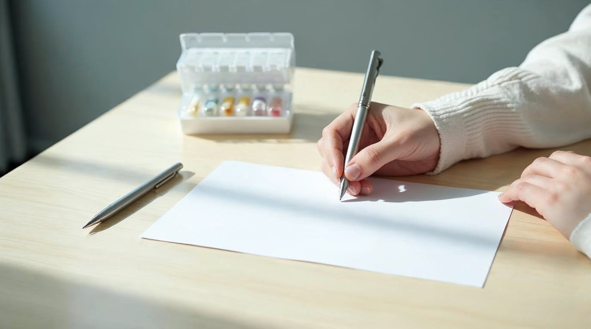
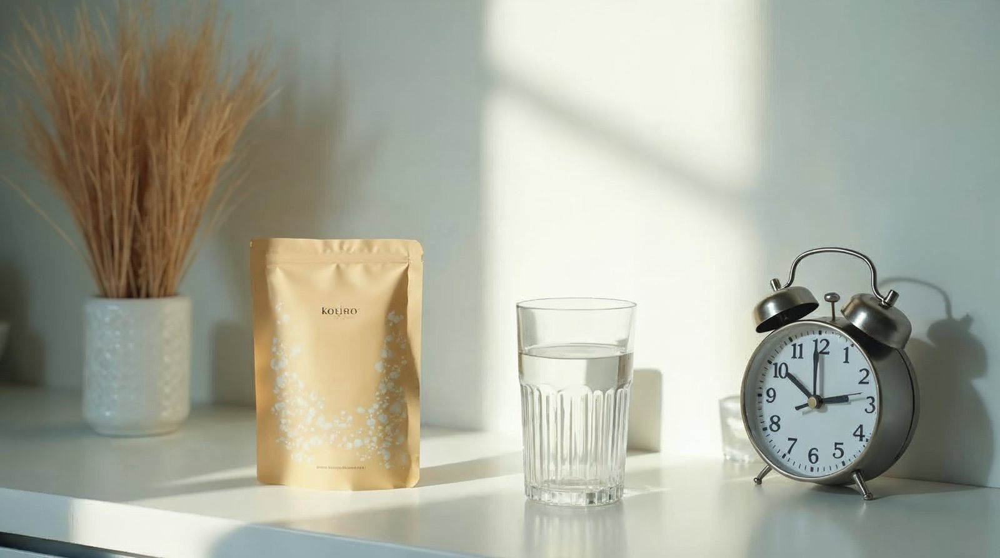
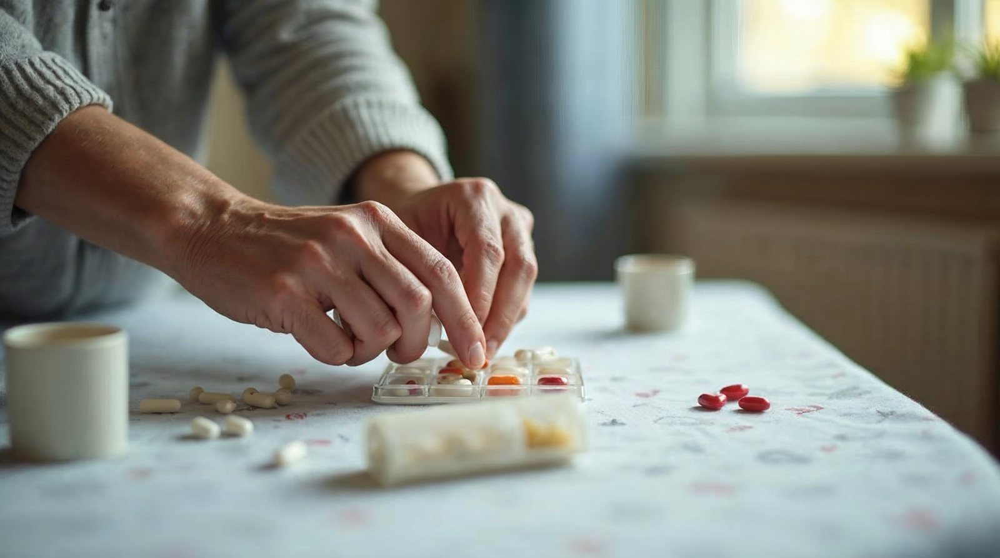
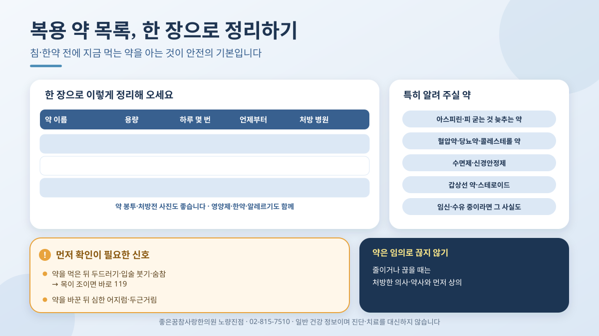

이종호 한의사 감수좋은꿈참사랑한의원 대표원장 (한의사 면허번호 19769)발행 2026-11-22 · 수정 2026-11-26
이 글의 차례
아침 식탁 위에 약통이 몇 개 놓여 있습니다. 혈압약은 내과에서, 위장약은 동네 의원에서, 무릎 때문에 받은 소염제는 정형외과에서 받았습니다. 그 옆에는 자녀가 사다 준 오메가3와 홍삼, 지인이 좋다고 권한 유산균도 있지요.
하나하나는 다 이유가 있어서 드시는 건데, 막상 누가 "지금 드시는 약이 뭐예요?" 하고 물으면 말문이 막힙니다. "하얀 거 하나, 노란 거 하나… 이름은 잘 모르겠어요."
진료실에서 이런 말씀을 자주 듣습니다. 그리고 그 말 끝에 "제가 너무 모르죠?" 하고 머쓱해하시곤 합니다. 저는 그럴 때마다 전혀 그렇지 않다고 말씀드립니다. 약 이름을 줄줄 외우는 분은 오히려 드뭅니다. 여러 병원을 다니며 몸을 챙기시느라 바쁘셨을 텐데, 이름까지 기억하지 못하는 게 당연합니다.
다만 한의원에 오실 때 지금 드시는 약을 정확히 알려 주시는 것은 안전을 위해 꼭 필요한 일입니다. 이 글은 그걸 어떻게 하면 덜 번거롭게 준비할 수 있을지, 제가 진료실에서 드리는 말씀을 그대로 옮겨 본 것입니다.
왜 한의원에서도 약을 물어볼까요
"한의원인데 양약을 왜 물어보세요?" 하고 의아해하시는 분도 계십니다. 충분히 궁금하실 만합니다. 이유는 생각보다 단순합니다. 같은 침, 같은 한약이라도 그분이 지금 어떤 약을 드시는지에 따라 제가 조심해야 할 부분이 달라지기 때문입니다.
예를 들어 피가 굳는 것을 늦추는 약이나 아스피린을 드시는 분은 침을 맞은 자리에 멍이 조금 더 잘 들 수 있습니다. 그래서 침의 깊이나 자리, 약침 여부를 더 신중하게 정합니다.
혈압약이나 당뇨약을 드시는 분은 한약을 상담할 때 지금 혈압과 혈당이 어떻게 관리되고 있는지, 어떤 약재를 조심해야 할지 함께 생각합니다. 수면제나 신경안정제를 드시는 분이라면 잠과 긴장 이야기를 할 때 그 약이 어떤 역할을 하고 있는지 알아야 대화가 엇나가지 않습니다.
영양제와 건강기능식품도 마찬가지입니다. 홍삼, 오메가3, 각종 즙이나 환은 '약은 아니니까' 하고 말씀을 안 하시는 경우가 많은데, 성분에 따라 한약과 겹치는 부분이 있을 수 있습니다. 그래서 저는 "몸에 넣는 건 다 알려 주세요"라고 말씀드립니다.
그리고 솔직히 말씀드리면, 여러 병원에서 약을 받으시는 분은 본인도 전체 목록을 모르는 경우가 아주 흔합니다. 한 번 정리해 두시면 한의원뿐 아니라 다른 병원에 가실 때도, 응급한 상황에서 가족이 대신 설명해야 할 때도 큰 도움이 됩니다.
가장 쉬운 방법은 사진입니다
목록을 손으로 쓰는 게 부담스러우시면 이것 하나만 기억해 주세요. 사진입니다.
약 봉투 앞면, 처방전, 약국에서 받은 복약 안내문, 영양제 병의 앞면과 성분표. 이것들을 휴대폰으로 한 장씩 찍어 앨범에 모아 두시면 그게 곧 약 목록입니다. 약 봉투에는 보통 약 이름과 하루 몇 번 먹는지, 처방한 병원이 다 적혀 있어서 따로 옮겨 적지 않아도 됩니다. 진료실에서 그 사진을 보여 주시기만 하면 됩니다.
사진도 어려우시면 드시는 약을 봉투째 가방에 넣어 오셔도 괜찮습니다. 낱알만 남아 있어도 모양과 색, 새겨진 글자로 확인할 수 있는 경우가 많습니다.
사진을 찍어 두실 때 작은 요령이 하나 있습니다. 휴대폰 앨범에 '내 약'이라는 이름으로 폴더를 하나 만들어 두시는 겁니다. 약이 바뀔 때마다 새 봉투를 찍어 그 폴더에 넣어 두면, 진료실에서 "잠깐만요, 어디 있더라" 하며 앨범을 한참 넘기지 않아도 됩니다. 부모님 약을 챙기시는 자녀분이라면 부모님 폴더를 따로 만들어 두셔도 좋겠습니다.
한 장으로 정리하고 싶다면
한 번 제대로 정리해 두고 싶으신 분께는 아래 순서로 적어 보시길 권합니다. 종이 한 장이나 휴대폰 메모 하나면 충분합니다.
- 처방약: 약 이름, 한 번에 몇 알, 하루 몇 번(아침·점심·저녁·자기 전), 언제부터
- 처방한 병원과 진료과, 무엇 때문에 받은 약인지
- 가끔 드시는 약: 진통제, 소화제, 수면 보조제 등과 한 달에 몇 번쯤 드시는지
- 영양제와 건강기능식품: 이름과 하루 양
- 최근 한 달 사이 새로 시작했거나 바꾸거나 멈춘 약과 그 날짜
- 약이나 음식 알레르기, 약 먹고 불편했던 경험
- 임신 중이거나 수유 중인지, 가까운 시일에 수술이나 시술 예정이 있는지
이 가운데 특히 놓치기 쉬운 것이 '가끔 드시는 약'입니다. 두통약을 일주일에 서너 번 드시는 분은 본인이 '가끔'이라고 생각하셔도, 진료할 때는 꽤 중요한 정보가 됩니다. 몇 번쯤 드시는지 대략이라도 적어 주세요.
또 하나는 '최근에 바뀐 약'입니다. 약을 바꾸고 나서 어지럽다거나 속이 불편하다는 이야기는, 바뀐 날짜를 알고 있으면 훨씬 쉽게 이어집니다.
이런 분들이 많습니다
실제 한 분의 이야기가 아니라 진료실에서 자주 보는 모습들입니다.
예를 들어 부모님을 모시고 오는 자녀분이 계십니다. 부모님은 약 이름을 모르시고, 자녀분도 따로 살아서 잘 모르시지요. 이럴 땐 오시기 전날 부모님 댁 약통을 한 번 열어 사진을 찍어 오시는 것만으로도 충분합니다. 보호자가 곁에서 본 변화, 예를 들어 요즘 밥을 덜 드신다거나 밤에 자주 깨신다는 이야기도 함께 들려주시면 좋습니다.
예를 들어 직장 건강검진에서 혈압이나 혈당 이야기를 듣고 약을 시작한 지 얼마 안 된 분도 있습니다. 약을 먹은 지 몇 달 안 됐으니 말 안 해도 되겠지 하시는데, 오히려 시작한 지 얼마 안 된 약일수록 알려 주셔야 합니다. 몸이 아직 그 약에 적응하는 중일 수 있기 때문입니다.
예를 들어 영양제를 여러 가지 챙겨 드시는 분도 많습니다. 하나하나는 좋은 마음으로 시작하셨는데 모아 보면 열 가지가 넘기도 합니다. 저는 그걸 나무라지 않습니다. 다만 한약을 상담할 때 함께 살펴야 하니, 병 사진이라도 한 번 보여 주세요.

이렇게 적어 오시면 한눈에 보입니다
어떻게 적는지 감이 잘 안 오시는 분을 위해 예시를 하나 들어 보겠습니다. 실제 누군가의 목록이 아니라 모양을 보여 드리려고 만든 것입니다.
"아침 식후: 혈압약 1알(내과, 3년 전부터). 저녁 식후: 위장약 1알(동네 의원, 지난달부터). 가끔: 두통약, 한 달에 4~5번. 영양제: 오메가3 하루 1알, 홍삼 스틱 하루 1포. 알레르기: 특별히 없음. 최근 바뀐 것: 11월 초 혈압약 용량 조정."
이렇게 몇 줄이면 충분합니다. 문장이 매끄럽지 않아도, 맞춤법이 틀려도 상관없습니다. 중요한 건 '언제, 무엇을, 얼마나, 어디서 받았는지'가 보이는 것입니다. 쓰다 보면 "어, 이 약은 언제부터 먹었더라?" 하고 막히는 부분이 생기실 텐데, 그런 칸은 비워 두셔도 됩니다. 진료실에서 같이 떠올려 보면 됩니다.
지병과 수술 이야기도 함께
약 목록과 짝을 이루는 것이 앓고 계신 병과 예전에 받은 수술 이야기입니다. 고혈압, 당뇨, 갑상선 질환, 간이나 신장 쪽 이야기를 들은 적이 있는지, 예전에 큰 수술을 받으셨는지, 심장에 기계를 넣으셨는지 같은 것들입니다. 특히 심장 박동기 같은 기기를 몸에 지니고 계신 분은 치료 방법을 정할 때 꼭 고려해야 하니 미리 알려 주세요.
건강검진 결과지도 있으면 가져오셔도 좋습니다. 숫자를 다 해석해 드리겠다는 뜻이 아니라, 그분의 몸이 그동안 어떤 이야기를 해 왔는지 함께 보는 참고 자료가 되기 때문입니다. 간 수치나 신장 수치에 대해 들은 말씀이 있다면 한약을 상담할 때 함께 생각합니다.
약 목록은 한 번 만들고 끝이 아닙니다
목록을 한 번 정리해 두셨다면, 그다음은 '고쳐 쓰는 습관'이 필요합니다. 약은 생각보다 자주 바뀝니다. 계절이 바뀌면서 감기약을 며칠 드시기도 하고, 정기 검진 뒤 용량이 조정되기도 하고, 치과에서 항생제를 며칠 받아 오기도 하지요.
그때마다 휴대폰 메모에 날짜와 함께 한 줄만 덧붙여 두세요. "11월 둘째 주, 치과 항생제 5일." 이 정도면 충분합니다.
종이로 정리하신 분은 지갑이나 가방 안쪽에 접어 넣어 두시면 좋습니다. 갑자기 다른 병원에 가게 되었을 때 꺼내 보여 드리기만 하면 되니까요. 가족 가운데 한 분과 그 목록을 공유해 두시는 것도 권합니다. 본인이 설명하기 어려운 상황이 생겼을 때 가족이 대신 알려 줄 수 있습니다.
약국을 한 곳 정해 두고 다니시는 것도 방법입니다. 여러 병원에서 처방을 받더라도 같은 약국에서 약을 받으시면, 약사님이 전체 복용 내역을 함께 보아 주실 수 있습니다. 목록이 헷갈릴 때 약국에 "제가 요즘 받은 약 정리 좀 부탁드려도 될까요?" 하고 여쭤보셔도 괜찮습니다.

한약을 드시게 된다면 약 시간도 같이 봅니다
한약 상담을 하게 되면 저는 지금 드시는 약을 하루 중 언제 드시는지도 함께 여쭙니다. 아침 식후에 혈압약, 저녁 식후에 위장약, 자기 전에 수면제처럼 이미 하루 일정이 꽉 찬 분이 많거든요. 그 사이에 한약을 언제 드시면 편할지, 함께 드실 때 어떤 점을 지켜보시면 좋을지 그분의 하루에 맞춰 말씀드립니다.
한약을 드시는 동안 다른 병원에서 새 약을 처방받게 되면 그 사실도 알려 주세요. 반대로 다른 병원에 가실 때는 "요즘 한약을 먹고 있다"고 그쪽 의사께도 말씀해 주시면 좋습니다. 서로 알고 있어야 양쪽에서 더 안심하고 진료할 수 있습니다.
저는 이걸 '서로에게 다리를 놓는 일'이라고 생각합니다. 그 다리는 환자분이 직접 건네주시는 약 목록 한 장으로 놓입니다.

아이와 임신 중인 분, 어르신이라면
아이를 데리고 오시는 보호자분은 아이가 최근에 먹은 감기약, 해열제, 알레르기 약, 그리고 혹시 먹이고 있는 영양제나 유산균을 알려 주세요. 해열제를 마지막으로 먹인 시간도 함께 알려 주시면 열이 어떻게 흘러가는지 이해하는 데 도움이 됩니다.
임신 중이시거나 임신 가능성이 있는 분, 수유 중인 분은 그 사실을 먼저 말씀해 주세요. 침의 자리와 한약 상담 모두 그에 맞춰 훨씬 조심스럽게 정합니다. 말씀하기 쑥스러우시면 종이에 적어 건네주셔도 됩니다.
어르신은 드시는 약의 가짓수가 많고, 비슷해 보이는 약을 헷갈려 하시는 경우가 많습니다. 요일별 약통을 쓰고 계시다면 그 약통을 통째로 사진 찍어 오셔도 좋습니다. 저는 그 사진을 보면서 하나씩 여쭤 보겠습니다.
이것만은 꼭 부탁드립니다
한의원에 다니신다고 해서 지금 드시는 약을 스스로 줄이거나 끊지는 마세요. 혈압약, 당뇨약, 피를 묽게 하는 약, 갑상선 약, 스테로이드, 수면제나 신경안정제 같은 약은 갑자기 멈추면 몸에 무리가 갈 수 있습니다. 약을 조절하는 일은 그 약을 처방한 의사와 상의해서 정하셔야 합니다.
저도 진료실에서 "그 약은 처방해 주신 선생님과 상의하시면서 계속 드세요"라고 말씀드립니다. 한의원 진료는 지금 받으시는 치료와 함께 가는 것이지, 그것을 대신하려는 것이 아닙니다. 혹시 약을 드시면서 불편한 점이 있다면 그것도 처방한 의사께 먼저 알려 주시고, 제게도 말씀해 주시면 함께 고려하겠습니다.
좋은꿈참사랑한의원에 처음 오시면
드시는 약을 처음부터 다 떠올리지 못하셔도 괜찮습니다. 진료실에 들어오시면 저는 먼저 어디가 불편해서 오셨는지 충분히 듣고, 이어서 드시는 약과 앓고 계신 병을 여쭙니다. 사진을 가져오셨다면 그걸 함께 봅니다.
그다음 양손을 내어 달라고 말씀드리고 맥을 짚습니다. 맥을 짚으면서 잠은 어떤지, 식사와 소화는 편한지, 몸이 찬 편인지 더운 편인지, 대변은 어떤지 여쭙니다. 드시는 약이 많은 분일수록 이런 일상의 이야기가 몸 전체를 이해하는 데 도움이 됩니다. 필요하다고 판단되면 혀를 보거나 배를 살펴보기도 합니다.
그렇게 들은 내용과 드시는 약을 함께 놓고 침, 한약 상담 등 방법을 정합니다. 한약을 상담하실 때는 드시는 약과 몸 상태를 확인한 뒤에 판단하고, 함께 드실 때 지켜보실 점을 말씀드립니다. 귀가 전에는 약과 관련해 다음에 확인할 일도 정리해 드립니다.
이런 증상은 먼저 확인이 필요합니다
- 약을 드신 뒤 두드러기가 올라오거나 입술과 눈이 붓는 경우
- 약을 드신 뒤 숨이 차고 목이 조이는 느낌이 드는 경우
이런 신호가 있으면 한의원보다 가까운 병원이나 응급실을 먼저 찾으세요.
정리하는 일이 귀찮게 느껴지실 수 있습니다. 그래도 한 번 해 두시면 그 종이 한 장이, 혹은 사진 몇 장이 여러분의 몸을 지켜 주는 작은 안전장치가 됩니다. 다음에 오시면 저는 "요즘 드시는 약 사진 있으세요?"라고 여쭙겠습니다. 없으셔도 괜찮습니다. 그때 같이 정리하면 됩니다.

먼저 확인이 필요한 신호
- 약을 드신 뒤 두드러기가 올라오거나 입술과 눈이 붓는 경우
- 약을 드신 뒤 숨이 차고 목이 조이는 느낌이 드는 경우
왜 한의원에서도 약을 물어볼까요
- "한의원인데 양약을 왜 물어보세요?" 하고 의아해하시는 분도 계십니다.
- 충분히 궁금하실 만합니다.
가장 쉬운 방법은 사진입니다
- 목록을 손으로 쓰는 게 부담스러우시면 이것 하나만 기억해 주세요.
- 약 봉투 앞면, 처방전, 약국에서 받은 복약 안내문, 영양제 병의 앞면과 성분표.
한 장으로 정리하고 싶다면
- 처방약: 약 이름, 한 번에 몇 알, 하루 몇 번(아침·점심·저녁·자기 전), 언제부터
- 처방한 병원과 진료과, 무엇 때문에 받은 약인지
자주 묻는 질문
약 이름을 모르는데 어떻게 하나요?
약 봉투나 처방전, 약을 찍은 사진을 가져오세요. 약국에서 받은 복약 안내문도 좋습니다. 아무것도 없으시면 진료실에서 하나씩 여쭤 가며 함께 정리합니다.
영양제도 말해야 하나요?
네, 영양제와 건강기능식품도 함께 알려 주세요. 홍삼이나 즙, 환처럼 약이 아니라고 생각하기 쉬운 것도 성분에 따라 함께 살펴야 할 수 있습니다.
약을 먹고 있으면 한약을 못 먹나요?
드시는 약과 몸 상태에 따라 다릅니다. 확인한 뒤 판단하고, 함께 드실 때 지켜보실 점을 말씀드립니다.
진통제를 가끔 먹는 것도 적어야 하나요?
네, 가끔 드시는 약도 한 달에 몇 번쯤 드시는지 함께 알려 주시면 도움이 됩니다.
한의원 치료를 받는 동안 먹던 약을 줄여도 되나요?
드시던 약은 스스로 줄이거나 끊지 마세요. 약 조절은 그 약을 처방한 의사와 상의해서 정하셔야 합니다.
좋은꿈참사랑한의원은 재진 때 지난번 이야기부터 이어서 여쭙니다. 진료시간과 예약은 오시는 길에서 확인하세요.
어디서 상담받을 수 있나요?
좋은꿈참사랑한의원은 서울 동작구 만양로2길 2 신성빌딩 3층·5층(서울 동작구 상도동, 7호선 상도역 3번 출구 근처)에 있습니다. 한의사 3명(이종호 대표원장, 조영기 수석진료원장, 정원영 진료원장)이 진료합니다. 진료시간은 평일 09:30~20:00(점심 13:00~14:00), 토·일·공휴일 09:30~15:00이며, 방문 전 전화로 확인을 권합니다. 예약은 네이버 예약, 카카오톡 상담, 전화 02-815-7510로 받습니다.
이 글은 일반적인 건강 정보이며 개인의 진단이나 치료를 대신하지 않습니다. 증상이 있거나 복용 중인 약이 있다면 진료를 통해 확인하세요. 치료 효과는 개인마다 다를 수 있습니다.
작성 기준: 일반적으로 알려져 있는 건강 정보를 참고해 정리했습니다(대표원장 감수). 증상 기록은 1~2주 동안 하루 1회, 비슷한 시간에 적어 오시면 지난 상태와 비교하기 쉽습니다.